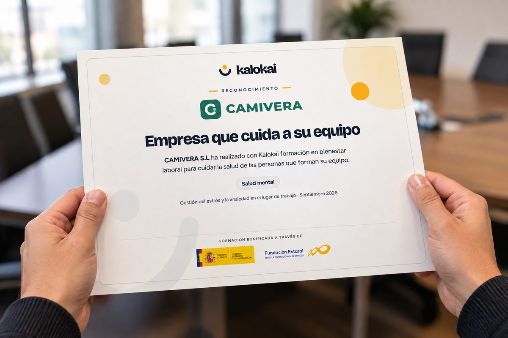

Salud física
Un cuerpo cuidado rinde mejor.
- Ergonomía y salud postural
- Actividad física en la jornada
- Alimentación y hábitos saludables
- Descanso y calidad del sueño
Formamos a tu equipo para que se cuide por dentro y por fuera: salud física, salud mental y un buen ambiente de trabajo. Porque una empresa es, ante todo, las personas que la forman.
Quien se siente bien trabaja mejor, colabora mejor y se queda. Por eso no empezamos por la productividad, sino por la salud y el bienestar de cada persona.
Antes de nada, hablemos de tu equipo. Su energía, sus preocupaciones y su día a día marcan el programa.
Nada de charlas que se olvidan. Trabajamos hábitos concretos que se aplican al día a día se mantienen.
Cuidar a las personas no es un extra: es la base para que la empresa mejore en todo lo demás.
Cuando tu gente está bien, tu empresa va mejor.
Detrás de cada área hay profesionales de fisioterapia, deporte y/o psicología. Puedes trabajar un área concreta o combinarlas en un mismo programa, siempre adaptadas a tu equipo.
Un cuerpo cuidado rinde mejor.
Una mente en calma decide mejor.
Un buen ambiente se construye.
También formamos en
Saber actuar a tiempo puede salvar una vida.
Un proceso cercano, de principio a fin, con nuestro equipo acompañándote.
Conversamos con dirección y/o las personas del equipo para entender cómo están y qué necesitan de verdad.
Creamos un programa de bienestar pensado para tu equipo, su ritmo y su forma de trabajar.
Sesiones presenciales, en remoto o mixtas, con profesionales de la fisioterapia, el deporte y la psicología.
Cada participante recibe su diploma. Evaluamos la formación al terminar y de nuevo a los tres meses.
Cuidar del equipo merece quedar por escrito. Por eso cada formación termina con un reconocimiento, para las personas y para la empresa.
Al terminar la formación, cada participante recibe su diploma, y la empresa, el certificado que acredita la formación realizada por su equipo.
Distingue a tu empresa por su compromiso con el bienestar de las personas que la forman. Un reconocimiento para lucir en la oficina y compartir con clientes, candidatos y con tu propio equipo.

La mayoría de las formaciones que ofrecemos se pueden bonificar hasta el 100 % con los créditos de FUNDAE. Esto quiere decir que puedes realizar formaciones de bienestar para tus empleados a coste 0 para la empresa.
Saber más sobre la formación bonificada